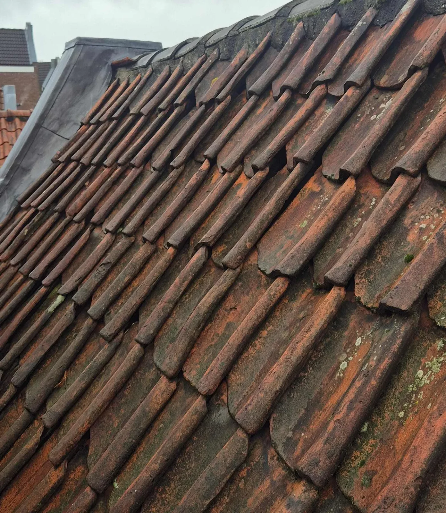
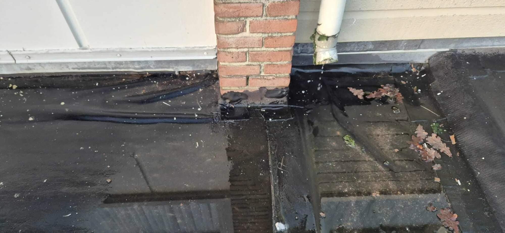
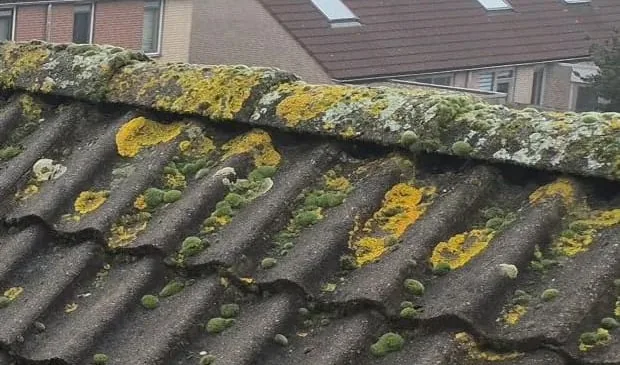

Gratis dakinspectie
Een dakprobleem ontstaat zelden van de ene op de andere dag. Vaak zijn er al signalen zichtbaar voordat schade echt merkbaar wordt. Met een gratis dakinspectie krijg je inzicht in de staat van het dak en wordt duidelijk of er sprake is van een risico dat aandacht vraagt.
De inspectie is bedoeld om helderheid te geven — niet om direct te verkopen. Je weet waar je aan toe bent en welke vervolgstap logisch is, of dat nu direct ingrijpen is of juist niets doen.

Onze aanpak in 4 stappen
Een inspectie is pas waardevol als je daarna weet wat logisch is: niets doen, volgen, herstellen of verder onderzoek.
Wat past bij jouw situatie?
Klik een kaart open. Je ziet direct de relevante uitleg, zonder dat er tekst verdwijnt.
❓ Twijfel ▾
Twijfel je over de staat van je dak, maar zie je (nog) geen duidelijke lekkage? In zo’n situatie is een dakinspectie vaak de meest directe manier om te bepalen of afwachten verstandig is of dat het beter is om nu iemand naar je dak te laten kijken. Een dakinspectie is bedoeld om precies dat grijze gebied helder te maken. Je krijgt inzicht in wat normaal is, wat aandacht vraagt en wat beter niet langer kan wachten — zonder dat je meteen in een reparatietraject zit.
🌬️ Na storm ▾
Ook na extreme weersomstandigheden kan een inspectie duidelijk maken of er schade is ontstaan die niet direct zichtbaar is. Juist in die situatie helpt een technische momentopname om te bepalen of afwachten kan, of dat ingrijpen verstandig is.
🏠 Voor aankoop/verkoop ▾
Een dakinspectie is verstandig wanneer er twijfel bestaat over de staat van het dak, bijvoorbeeld bij vochtplekken, lekkages, ouderdom van het dak of voorafgaand aan aankoop of verkoop. Als er sprake is van een situatie waarin bevindingen ook richting derden moeten worden onderbouwd — bijvoorbeeld bij een verzekeringskwestie, VvE of aankooptraject — kan een rapportage dakinspectie worden opgesteld als aanvullende stap.
Snel navigeren op deze pagina
Ga direct naar het onderdeel dat voor jouw situatie relevant is.
Wat een gratis dakinspectie inhoudt
Tijdens de dakinspectie wordt het dak volledig beoordeeld, inclusief aansluitingen zoals schoorstenen, dakranden, nokken en dakdoorvoeren. Bij zichtbare schade of signalen van lekkage wordt extra aandacht besteed aan het betreffende dakdeel.
Bevindingen worden vastgelegd met foto’s en toegelicht, zodat duidelijk is wat er is aangetroffen en wat dit technisch betekent voor de staat van het dak.

Wanneer een dakinspectie zinvol is
Een dakinspectie is verstandig wanneer er twijfel bestaat over de staat van het dak, bijvoorbeeld bij vochtplekken, lekkages, ouderdom van het dak of voorafgaand aan aankoop of verkoop. Ook na extreme weersomstandigheden kan een inspectie duidelijk maken of er schade is ontstaan die niet direct zichtbaar is.

Wat lost een dakinspectie op?
Veel dakproblemen beginnen klein: een naad die net iets loskomt, een pan die verschuift, een rand die langzaam zijn afdichting verliest. Zolang er nog geen water binnenkomt, is het moeilijk inschatten of dit onschuldig is of het begin van grotere schade.
Een dakinspectie brengt die onzekerheid terug tot iets concreets. Je weet na afloop waar je staat en welke risico’s er spelen. Wie die onzekerheid liever niet laat voortduren, kan die duidelijkheid eenvoudig krijgen door een inspectie in te plannen.
Voor wie een dakinspectie bedoeld is
Deze dienst past bij situaties waarin er twijfel is: na een storm, bij oudere dakbedekking, na een verbouwing of wanneer er binnen lichte vochtsporen ontstaan zonder duidelijke oorzaak. In zulke gevallen geeft een inspectie vaak genoeg houvast om te beslissen of afwachten kan, of dat ingrijpen verstandig is.
Wat wij tijdens een inspectie doen Klik om te openen/sluiten
De inspectie richt zich op alle onderdelen die samen het dak waterdicht houden: bedekking, naden, aansluitingen rond schoorstenen en dakkapellen, dakranden en afvoer. Het gaat niet om één losse beschadiging, maar om patronen die iets zeggen over slijtage en beweging. We kijken waar materialen op hun eind lopen en waar spanning of veroudering zichtbaar wordt.
Wat een inspectie wel en niet kan Klik om te openen/sluiten
Een dakinspectie is visueel. Dat betekent dat we zien wat bereikbaar en zichtbaar is, maar geen metingen doen in de constructie. Als er sterke aanwijzingen zijn voor verborgen waterwegen, is het opsporen van daklekkages nodig om de oorzaak echt te vinden. Dat onderscheid helpt om geen tijd te verliezen met de verkeerde vervolgstap.
Van inspectie naar vervolgstap
De uitkomst van een inspectie kan verschillen. Soms blijkt dat er geen direct risico is. In andere gevallen wordt duidelijk dat herstel, onderhoud of verder onderzoek nodig is.
Als er sprake is van een situatie waarin bevindingen ook richting derden moeten worden onderbouwd — bijvoorbeeld bij een verzekeringskwestie, VvE of aankooptraject — kan een rapportage dakinspectie worden opgesteld als aanvullende stap.
Rapportage dakinspectie (voor verzekering, VvE of aankooptraject)
Een rapportage is geen standaard onderdeel van de inspectie, maar een verdiepende aanvulling wanneer formele vastlegging of onderbouwing nodig is. Denk aan situaties waarin bevindingen moeten worden gedeeld met een verzekeraar, VvE, koper of andere betrokken partij.
In een rapportage worden bevindingen per dakonderdeel uitgewerkt en technisch onderbouwd, zodat deze ook buiten het gesprek standhouden. Dit geeft duidelijkheid richting derden en voorkomt interpretatieverschillen achteraf.
Belangrijk uitgangspunt daarbij is dat een rapportage alleen wordt opgesteld wanneer dit daadwerkelijk toegevoegde waarde heeft. Blijkt tijdens de inspectie dat dit niet het geval is, dan wordt er geen rapportage uitgewerkt.
Hoe je de uitkomst moet gebruiken
Na afloop heb je een overzicht van wat we hebben gezien en hoe dat technisch moet worden geïnterpreteerd. Sommige punten vragen om actie, andere kunnen worden gevolgd. Dat onderscheid is precies waar deze dienst voor bedoeld is.
In situaties waarin bewijs nodig is — bijvoorbeeld voor verzekering, aankoop of VvE — is een formele rapportage de volgende stap.
Wat het kost
De dakinspectie is volledig kosteloos en vrijblijvend. Alleen wanneer je na de inspectie kiest voor aanvullende diensten, zoals herstelwerkzaamheden of een rapportage, worden hiervoor kosten besproken.
Samenvattend
Deze dienst is er om twijfel weg te nemen. Wie nu wil weten waar hij aan toe is, kan die stap zetten door een dakinspectie aan te vragen en zijn situatie concreet te laten beoordelen. Geen verkooppraat, geen aannames — alleen een technische momentopname die je helpt beslissen wat verstandig is.